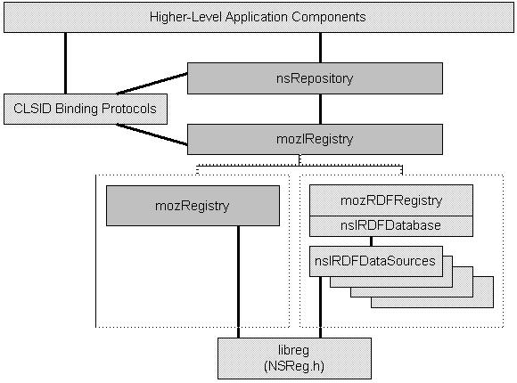

|
|
mozIRegistry
mozIRegistry
By Bill Law
| Date | Description |
| 1999 Jan 21 |
Initial (rough) draft |
- Introduction
-
The title of this document is completely misleading. It's not really about any
"registry interface" so much as it's about how Mozilla supports a more dynamic
binding between interface clients and the code that actually provides the
implementation of those interfaces.
It happens that this objective requires storing information about which
implementation to use in a place distinct from your source code. And it happens
that we've chosen, up till now, to store that information in the "Netscape registry"
file. Which explains how this information came to be associated with the notion of a
"registry."
Someday (I hope) this page will be properly titled so that everybody knows it is the
place to come to in order to find out how they are supposed to link together the various
XPCOM components that together form the Mozilla browser. The information below is
intended to tell you everything you need to know about how to do that.
- Summary
-
Clients will rely on nsRepository to create instances of a given class.
Clients requiring dynamic "binding" of CLSIDs will be required to use
some higher-level services (TBD) to figure out the CLSIDs they should
use. The intent is that such services themselves be built on top of the
new mozIRegistry interface.
We are proposing a new "mozIRegistry" XPCOM interface that provides the
same level of function as is currently provided by the "netscape
registry" implemented in libreg. nsRepository will be modified to use
this interface, thereby enabling alternative registry implementations to
be substituted at run/link time. There will be two registry interface
implementations: one based solely on libreg (for "compatibility") and a
fancier RDF-based one.
- Open Issues
-
We have identified two open issues, neither of which appear to be so
hard that it we won't be able to solve them in a timely fashion:
- If and when we remove what is currently a static binding of CLSIDs,
there will be the risk that required CLSIDs won't be present. A
corollary is that the build/install process will require updates to user
"registry" to enable new class implementations to be accessible. Our
current build/install process doesn't quite step up to these problems as
of yet.
- There are some bootstrapping issues related to using the Service
Manager to access the mozIRegistry interface. Currently,
nsIServiceManager requires a CLSID to access a service which hardcodes
the implementation of that service. This issue needs to be resolved in
order to enable alternative mozIRegistry implementations or to permit
other service implementations to be bound at runtime. I think a simple
CLSID "alias" mechanism (equivalent to COM's "component categories" in
some respects), along with the ability to "set" services (versus the
Service Manager insisting on creating the services itself) would
suffice. Worst case, clients would obtain the mozIRegistry singleton
via some other means (i.e., a "NSGetRegistry" function).
- Architecture
-

This diagram illustrates the various components that you will be using to interoperate
with other Mozilla components.
Some are for illustrative purposes (the lighter-colored
boxes near the top of the picture). These are placeholders for the types of components
you're designing and implementing. I'll talk about them to provide examples of how you
should use the other boxes.
These components (indicated by the darker-colored boxes) are the services you'll be
using. I'll be explaining the rationale for the design and implementation of these
components in this document.
Lastly, there's one component (labelled "mozRDFRegistry/nsIRDFDatabase") that potentially
will emerge as an improved implementation of one of the mozIRegistry interfaces. I'll
be discussing that implementation only briefly (mainly because I'm hoping I can pawn off
the chore of implementing it to somebody else).
Note
There's another component that turns out to also be real important when
you go to hook up your code with other Mozilla components. That's the
Service Manager. I'm just starting to understand the role it plays in this
and it isn't really under my jurisdiction, so there's nothing about it here right now.
In the future, I'll either add the information about it or at least put in a link to
it's documentation.
|
- Higher-Level Application Components
-
This box represents all the potential user's of the core registry/repository interfaces.
Your code (most likely) falls in this box.
These components will, to various degrees, need to use other components to do their thing.
Those other components presumably implement particular XPCOM interfaces.
So how do you go about creating an object that can provide the interface your component
requires?
One way is to create instances by using nsRepository. nsRepository is essentially
a mapping from XPCOM CLSIDs to class factories, plus code to manage that mapping,
including functions that create instances of a given CLSID.
The nsRepository functions are declared in
mozilla/xpcom/public/nsRepository.h.
Much more information about nsRepository can be found below.
The second way you access other components is via the Service Manager. That thing isn't
yet covered in this document. See the note above.
In this section, I'll discuss a number of different components, their requirements for
dynamically binding to other components, and how they might utilize the core XPCOM
components to satisfy those requirements.
- i18n
- XUL/xpToolkit
- App Shell
- CLSID Binding Protocols
-
This is a placeholder for potential encapsulations of particular idioms for storing
CLSID information in the registry and using that information, along with
nsRepository, to implement some instance creation protocol on top of the core XPCOM
services.
I think these things can be divided into two categories, according to the basic service
they provide:
- Identifying the implementers of a given interface.
- Figuring out an appropriate implementation given some arbitrary desired properties.
- nsRepository
-
This is basically the same as is provided today (see
mozilla/xpcom/public/nsRepository.h). The primary change to this
component is that we will modify it to utilize the new mozIRegistry
interface versus the NSReg.h functions it calls today. In addition, it
likely will have a couple of minor extensions:
- Support for specifying the .reg file name on Initialize().
I think this might make it a little more flexible, thereby making XPCOM more
general-purpose.
- Adding support so that the underlying mozIRegistry implementation can
be tailored by the initializer (client application).
This is so that
one can choose the basic libreg-based registry implementation versus a
more advanced, e.g., RDF-based, one.
nsRepository will only know CLSIDs. The burden of obtaining CLSIDs will
fall on the client components/applications. This subject requires a bit
more explanation at some point. Basically, we envision such services to
be based on the mozIRegistry interface. In other words, they will
implement, as Rick suggested last week, _protocol_ on top of the
registry and repository.
Note
I think it might be useful to refactor the nsRepository code so
that it is structured the same way as the Service Manager. One
could then make the nsRepository itself a service and permit
full (?!) de-coupling of XPCOM modules from the XPCOM
implementation.
|
- mozIRegistry
-
This is the new interface that will surface essentially the same
function as is currently provided by libreg (aka "netscape registry") as
declared in mozilla/modules/libreg/include/NSReg.h. Clients will obtain
this interface via the service manager (see
mozilla/xpcom/public/nsIServiceManager.h).
- mozRegistry
-
This is the simplistic implementation of the mozIRegistry interface. It
is built as a simple C++ wrapper for the functions in NSReg.h. It is
intended to provide a (slightly) lighter-weight implementation that is
entirely compatible with current libreg usage.
- mozRDFRegistry
-
This is an RDF-based mozIRegistry implementation that will provide
additional capabilities. Note that these additional capabilities will
not be utilized by nsRepository. It is envisioned that there will be
multiple flavors of underlying RDF data sources corresponding to the
libreg .reg file(s), the shared libraries installed, additional
components accessible via the 'net, etc.
The contents of this RDF data base will be stored in a plain-text
rdf/xml file so that it can easily be viewed edited. It will also
facilitate building a browser-based application that will allow people
to display and edit its contents.
|